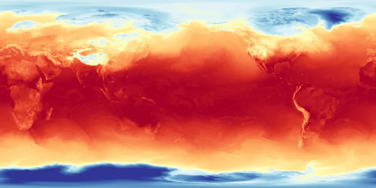

Benchmark / Near-lossless / era5-t2m-1h / era5-t2m-1h-02
era5-t2m-1h-02
2023-03-26 · sample details

Metadata
| id | era5-t2m-1h-02 |
|---|---|
| source | ERA5 hourly data on single levels, Copernicus Climate Data Store, GRIB |
| asset | reanalysis-era5-single-levels?variable=2m_temperature&date=2023-03-26&time=00:00/23:00&format=grib |
| crs | EPSG:4326 |
| transform | -0.125 0.25 0.0 90.125 0.0 -0.25 |
| datetime_start | 2023-03-26T00:00:00Z |
| datetime_end | 2023-03-26T23:00:00Z |
| bands | 2t@00:00 to 2t@23:00, 24 planes |
| shape | 24x721x1440 |
| dtype | uint16 |
| unit | K |
| scale |
|
| offset |
|
| input_sha256 | 8bc2f92df1b6e6d94e6a617c0f8cdccb7d4cc01f52d95712a5c4f9f2e6ab27cc |
| variable | 2m_temperature |
| grib_short_name | 2t |
| bits_per_value | 16 |